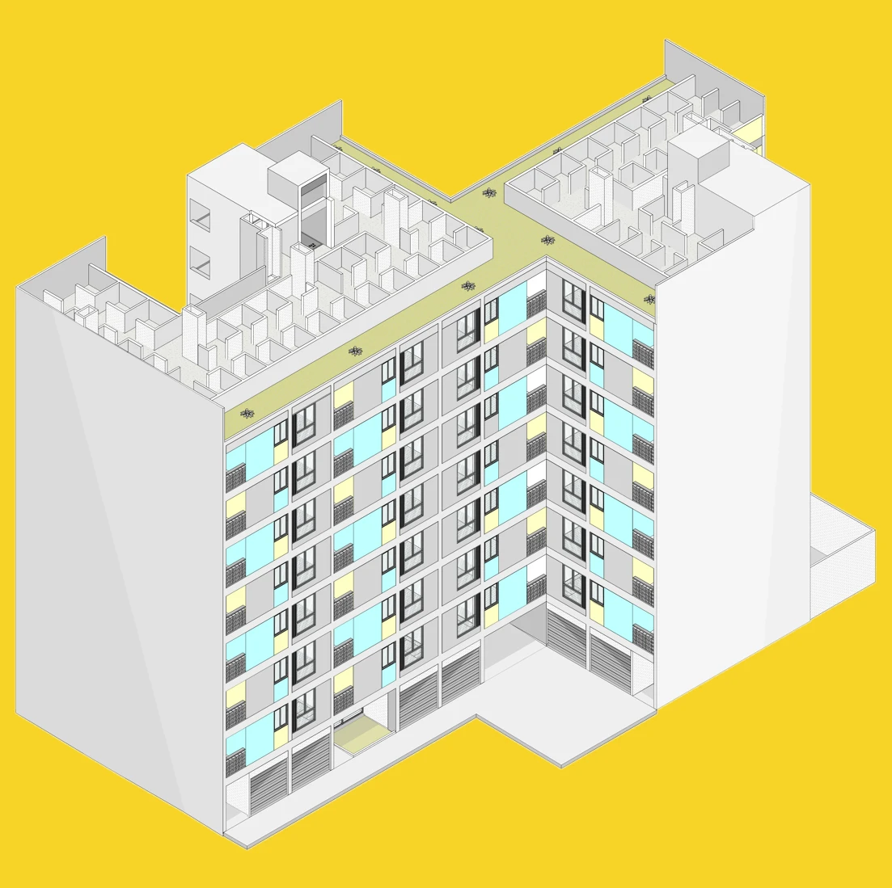
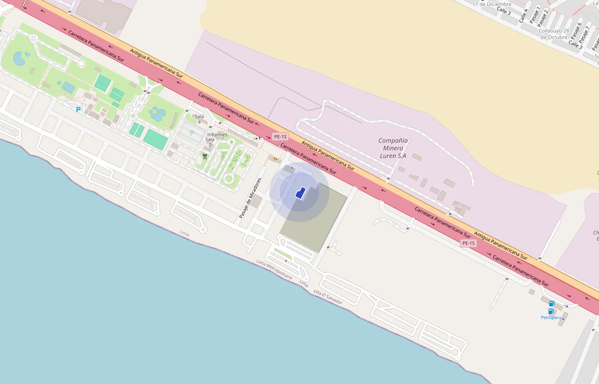

Villa El Milagro
56 departamentos de vivienda social en 639 m² de terreno, en Villa El Salvador.
- Terreno
- 639.30 m²
- Área techada
- 3,283.78 m²
- Niveles
- 8 + azotea
- Departamentos
- 56 VIS
- Estado
- En revisión
- Nuestro rol
- Anteproyecto y licencia
Por fuera.
Los renders del proyecto presentado para la licencia.
El edificio, piso por piso.
Es el mismo modelo 3D con el que diseñamos el proyecto: arquitectura y estructuras. Mira la planta de cada nivel o abre el modelo 3D y córtalo piso por piso.
Las 56 unidades.
Una sola tipología, 2 dormitorios y 1 baño, en dos torres: 5 departamentos por piso en la torre A y 3 en la torre B, del piso 2 al 8.
| Torre | Unidades | Participación | Área | Dormitorios y baños |
|---|---|---|---|---|
| Total | 100 % |
Áreas de cada departamento según las polilíneas de la licencia (lámina A601). Cada uno tiene además su lavandería en la azotea, de 2.31 a 4.21 m².
Por dentro.
Así se ven los ambientes de un departamento de dos dormitorios.
Las cifras del proyecto.
- Área del terreno
- 639.30 m²
- Área techada
- 3,283.78 m²
- Área vendible
- …
- Eficiencia de planta (vendible / techada)
- …
- Área libre
- 36.15 %
- Unidades
- 56 departamentos
- Estacionamientos
- 12
- Bicicletas
- 56
- Altura máxima de edificación
- 8 pisos + azotea
Terreno, área techada, área libre, estacionamientos y altura: plano de ubicación presentado para la licencia (setiembre de 2026). Bicicletas: planta del piso 1. Área vendible: los 56 departamentos (2,416.76 m²) más sus 56 lavanderías en la azotea (159.81 m²), según las polilíneas de la licencia (lámina A601).
Ubicación.
Pasaje S/N, Mz. E, lotes 08 y 09. Asoc. Villa El Milagro, Villa El Salvador, Lima.

¿Tienes un terreno? Hablemos de tu proyecto.
En una llamada de 30 minutos nos cuentas tu terreno o tu proyecto, en qué etapa está y qué quieres lograr. Sales con un siguiente paso: qué revisaríamos primero y si tiene sentido trabajar juntos.